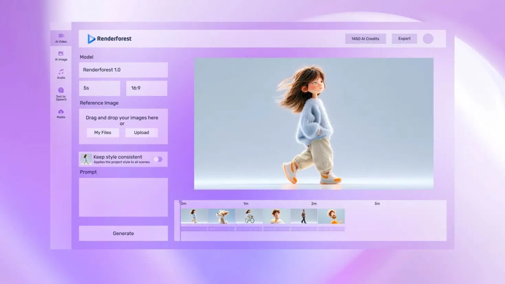

Renderforest 里藏得最深的五个冷门功能——用了三年才摸到
多数人把 Renderforest 当模板视频生成器用，其实它藏着开发者 API、MCP 协议入口、横竖版一键切换、积分分层打法这些官方不怎么宣传的硬核能力，挖出来能省很多重复劳动。
你以为Renderforest官网上这个 Renderforest 就是个套模板出视频的在线工具？拖几张图、换段文字、挑个音乐，一键渲染完事。我之前也是这么用的——直到某次为了批量出电商详情视频翻遍了它的设置面板，后来去Renderforest文档翻了一下，才发现这个平台藏了一堆官方不怎么宣传的暗门。
这篇就把我挖出来的五个真·冷门功能摊开说，每个都有明确的入口路径和适用场景，不是那种"听说它好像能"的传说。

一、开发者 API + SDK：让机器替你出片
这个藏得真深。Renderforest 不仅给浏览器用户做了界面，还公开了一套 REST API 和两个官方 SDK（NodeJS、PHP），入口挂在 developers 子域下，不在主站导航里。
普通用户大概率不会碰，但如果你有下面这些场景，它能省掉半条命：
- 电商批量出片：商品数据灌进同一模板，程序自动为每件商品生成一条展示视频——不用一个个手动换图
- 个性化营销视频：用户名单驱动，每个收件人拿到一条带自己名字的视频
- 内容管道自动化：CMS 发布新文章时，自动生成配套短视频推送社媒
官方文档特意强调了一点：API 本身变动频繁，稳定性锚点是 SDK——"避开破坏性变更的唯一方式是走 SDK"。也就是说别直接裸调接口，老老实实装它的 NodeJS 或 PHP 包，签名密钥（signKey）在初始化时传进去就行。
什么人用得上：有开发能力的团队、需要批量生产的内容运营。个人用户可以无视。
二、编辑器里的 MCP 面板：给 AI 助手预留的协议入口
这个更冷门——甚至官方帮助中心里都没怎么提。但如果你打开编辑器工具栏，仔细看一排按钮，会发现一个 MCP 面板的入口。
MCP（Model Context Protocol）是一种让 AI 助手调用外部工具的协议。Renderforest 把这个入口做进了编辑器，等于提前给 AI 自动化留好了插座。它和 REST API 构成了两极：API 给程序驱动，MCP 给 AI 助手驱动。
想象一下：你跟 AI 说"帮我把这批产品图套进模板、换个春节主题的配色、批量导出竖版"，AI 通过 MCP 面板直接操作编辑器完成整个流程——不用你手动点每一步。
目前这个能力的开放范围还在收敛，官方没大规模宣传。但入口已经在那了，关注一下开发者文档的更新，说不定哪天就能用上。
三、横竖版一键切换：一条横片改三种画幅
你做了一条 16:9 的横版视频想发 Reels，怎么办？以前我是重新开一个竖版模板、把素材重新拖一遍。直到发现它的画布比例切换功能——一键复制出三版。
具体路径：编辑器里找画布比例设置项，选竖版（9:16）、方形（1:1）或横版（16:9），点应用，它会基于当前画布自动生成对应比例的版本。不是让你重做，是复制一份当前的构图，然后你只需要微调一下缩放和位置。
三种画幅对照：
| 画幅 | 比例 | 典型场景 |
|---|---|---|
| 竖版 | 9:16 | Reels、Shorts、抖音 |
| 方形 | 1:1 | 信息流广告、朋友圈 |
| 横版 | 16:9 | YouTube 正片、网站内嵌 |
有个细节要注意：竖版平台会在画面底部和右侧叠 UI（评论栏、进度条），切换完竖版后记得把关键文字往中上部挪一挪，别被盖住了。还有前两秒是竖版信息流的生死线，切换后看一下开头镜头够不够动感。
手里只有横版素材想改竖版？两条路：直接换画布用缩放滑杆重新构图；或者选竖版模板把横素材当画中画嵌入，上下留白放标题文案。

四、积分不是乱花的：先用便宜模型打草稿
Renderforest 的积分体系设计得挺有意思——一个余额覆盖所有工具和模型，生成视频、生成图像、生成语音花的是同一本账，不用每个 AI 工具单独充值。各档年积分：Lite 9600、Pro 28800、Business 72000，新注册账户还有免费测试积分，不用绑卡——先去Renderforest下载拿个客户端注册就能领。
但多数人不知道的是，不同模型消耗的积分差别巨大：自研快速模型视频大概能出 2400 条左右，高端模型（Veo、Kling 类）可能就几十到几百条。省积分的标准姿势是先用便宜模型打草稿，确认方向、节奏、文案都对了，再切到贵模型精修。
还有几个不走积分的地方：模板替换和剪辑本身不扣积分，导出按订阅档位；上传自有素材、使用图库也不扣；素材位里的 AI 生图才按次扣，面板实时显示余额和充值入口。
月底清点一下用量，连续两月见底就该升档了——别等到余额耗尽卡在关键项目上。
五、优惠码的正规渠道：别信第三方网站
最后一个是避坑项。Renderforest 有官方的优惠码体系，但官方帮助中心把话说得很直白：所有第三方渠道提供的"促销码"都是无效的（fake coupons）。搜到的那种"90% off"的码，九成九是假的。
正规拿码只有三条路：
| 渠道 | 折扣 | 说明 |
|---|---|---|
| 社交分享 | 5%~8% | 把指定页面公开分享到社交动态获取，月付 5%、年付 8% |
| 学生优惠 | 20% | 用 .edu 教育邮箱联系官方支持申请 |
| 官方活动 | 不定期 | 关注官方博客和邮件通知 |
使用路径也挺隐蔽：导出时选好作品点 Export，支付页滚到底找优惠码区，点 I have a discount coupon? 那个链接才能输入。很多人翻不到这一步。
以上就是我折腾 Renderforest 三年挖出来的五个硬货。总结一下：
- 有开发能力就别手动批量出片，API + SDK 直接接管
- 编辑器那个 MCP 面板留个心眼，AI 自动化可能就从那进来
- 横竖版切换省重开模板的时间，但记得调安全区
- 积分分层打草稿，别上来就用最贵的模型
- 优惠码只信官方渠道，第三方的全是坑
Renderforest 有完整的功能介绍，官方渠道也能拿到客户端。把它用透，不只是套模板那么简单。